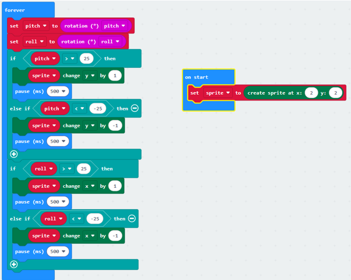

PRA 4.1
Vraag 1: De sprite beweegt 1 led naar links.
Vraag 2: Raar genoeg niks – maar de pixel zou verder moeten gaan buiten het veld van de microbit.
Vraag 3: De sprite gaat omhoog, omlaag, links en rechts door de microbit te bewegen.
Vraag 4: Er zijn helemaal geen fouten.
PRA 4.2
Vraag 1: Dan zijn de X en Y coördinaten gelijk.
Vraag 2:
- In het ‘on start’-blok: Maakt een playersprite op de aangegeven coördinaten. En maak een applesprite op een random plek/random coördinaten.
- In het ‘on button A-pressed’-blok: Gaat de player sprite 1 naar links.
- In het ‘on button B-pressed’-blok: Gaat de player sprite 1 naar rechts.
- In het ‘forever’-blok: Pauzeert kort, en beweegt daarna de applesprite met 1 coördinaat. Als de appelsprite de playersprite aanraakt, gaat de applesprite locatie X coördinaat naar een random X tussen 0 en 4, en de Y gaat naar coördinaat 0.
Vraag 3:
- Wanneer je een appel vangt: De appel komt ergens random bovenin het scherm terug, wat betekent dat je hem goed hebt gevangen.
- Wanneer je de appel niet vangt: De appel blijft vallen tot hij de onderkant van het scherm raakt, en daarna gebeurt er niks meer.
- Wanneer je niks doet: De appel blijft gewoon vallen en verdwijnt onderaan het scherm zonder dat er iets gebeurt.
Dingen die niet goed werken of ontbreken:
- Geen verlies als je de appel mist: Als je de appel niet vangt, gebeurt er niks. Het zou beter zijn als de speler HP verliest of het spel stopt wanneer de appel de onderkant van het scherm raakt.
- Scoretelling: Er is geen score. Je zou punten kunnen verdienen elke keer dat je een appel vangt, zodat je kunt zien hoe goed je het doet.
- Snelheid: De appels vallen steeds even snel. Het zou leuker zijn als de snelheid meer wordt naarmate je meer appels vangt, waardoor het spel uitdagender wordt.
- Meerdere appels: Op dit moment is er maar één appel tegelijk. Het spel zou moeilijker worden als er meerdere appels tegelijk vallen.
- Game over-functie: Het spel stopt nooit echt. Er zou een game over-scherm moeten verschijnen als je te veel appels mist.
Functionaliteiten om toe te voegen:
- Levens: Voeg levens toe, zodat je niet meteen verliest als je een appel mist. Bijvoorbeeld, drie levens en als die op zijn, is het game over.
- Score: Een score die laat zien hoeveel appels je hebt gevangen, zodat je je eigen record kunt verbeteren.
- Moeilijkheidsgraad: Laat het spel steeds moeilijker worden door de appels sneller te laten vallen of meer appels tegelijk te laten verschijnen.
- Game over-scherm: Voeg een game over-scherm toe dat komt wanneer je te veel appels mist, met een optie om opnieuw te beginnen.
PRA 4.3
Vraag 1: De micro:bit laat zien hoeveel graden het in een richting is gedraaid.
Vraag 2: P: 3, R: 0.
Vraag 3: P verandert als je de microbit naar boven en beneden kantelt. R verandert als je de microbit naar links en rechts kantelt.
Vraag 4: P is negatief als je de microbit naar boven kantelt. R is negatief als je de microbit naar links kantelt.
Vraag 5 & 6:
Vraag 7: Je moet aanpassen vanaf hoeveel roll en pitch de microbit de x en y verandert.
PRA 4.4
Stap 1
Bij het toevoegen van de bubbel Sprite X (Game > Sprite X) kun je ook de volgende waardes kiezen:
- y: De verticale positie van de sprite.
- x: De horizontale positie van de sprite.
- direction: De directie van de sprite.
- brightness: De helderheid.
- blink: Knipper.
Vraag 1
Zoek op internet naar de betekenissen van deze waardes:
- y: De verticale positie van de sprite. Dit verwijst naar de verticale coördinaat waar de sprite zich op een scherm of canvas bevindt. Het bepaalt de hoogtepositie van de sprite.
- x: De horizontale positie van de sprite. Dit geeft de horizontale coördinaat aan waar de sprite zich bevindt op een scherm of canvas. Het bepaalt de breedtepositie van de sprite.
- direction: De directie van de sprite. Dit duidt de richting aan waarin de sprite beweegt of gericht is. Het kan hoeken, rotaties of vectoren omvatten die de oriëntatie of beweging van de sprite bepalen.
- brightness: De helderheid. Dit staat voor de intensiteit van de verlichting of de helderheid van een sprite, vaak geassocieerd met visuele effecten zoals verlichting in games of animatie.
- blink: Knipper. Dit impliceert dat de sprite periodiek en herhaaldelijk aan en uit gaat, wat een knipperend effect creëert. Dit kan worden gebruikt voor visuele signalering of animatie-effecten.
Vraag 2
Hier zijn de beschrijvingen van de functionaliteiten:
- Create sprite at x: y: Maak een nieuwe sprite op de gegeven x- en y-coördinaten.
- Delete sprite: Verwijder de geselecteerde sprite uit het spel.
- Sprite change x by: Verander de x-positie van de sprite met een bepaalde waarde (bijvoorbeeld, + 1).
- Sprite set x to: Zet de x-positie van de sprite naar een specifieke waarde.
- Remove life: Verminder je levens van de sprite met 1.
- Set life: Stel de levens van de sprite in op een specifiek getal.
- Set score: Zet de score op een specifiek getal.
- Change score: Verander de score met een bepaalde waarde (bijvoorbeeld, + 10).
- Game over: Stop het spel en show een game-over scherm.
Vraag 3
- Sprite change x by: Dit voegt een bepaalde waarde toe aan de huidige x-positie van de sprite.
- Sprite set x to: Dit stelt de x-positie van de sprite in op een specifieke waarde, no matter de huidige positie.
Vraag 4
Het is handig om beide commands te hebben omdat:
- Set to: je de sprite naar een specifieke locatie kunt verplaatsen.
- Change by: je de sprite geleidelijk kunt verplaatsen of aanpassen, wat meer dynamiek en vloeiendheid in het spel brengt.